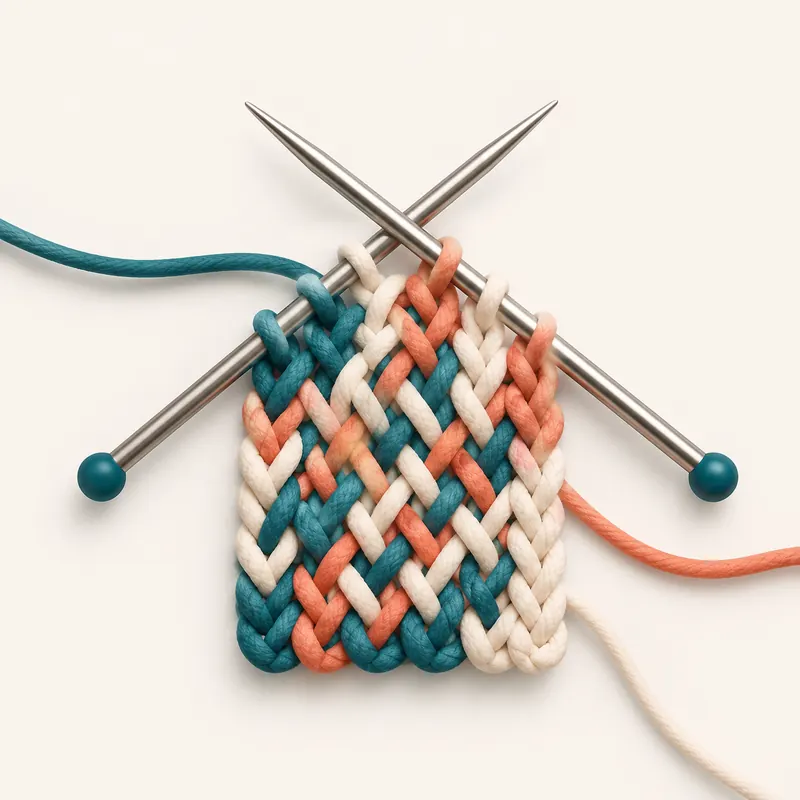

Unidad 8 · Reporte reproducible y publicacion en RPubs
Idea central
Un reporte reproducible une pregunta, datos, codigo, resultados y limitaciones en un documento que otro lector puede revisar.
Knit y R Markdown

---
title: "Analisis sencillo de datos de salud"
author: "Tu nombre"
output: html_document
---
```{r}
salud <- read.csv("data/salud_muestra.csv")
summary(salud)
```Publicar en RPubs
- Renderiza el documento a HTML en RStudio.
- Usa el boton Publish.
- Revisa privacidad y datos sensibles antes de compartir.
- Copia el enlace final y registralo en el aula.